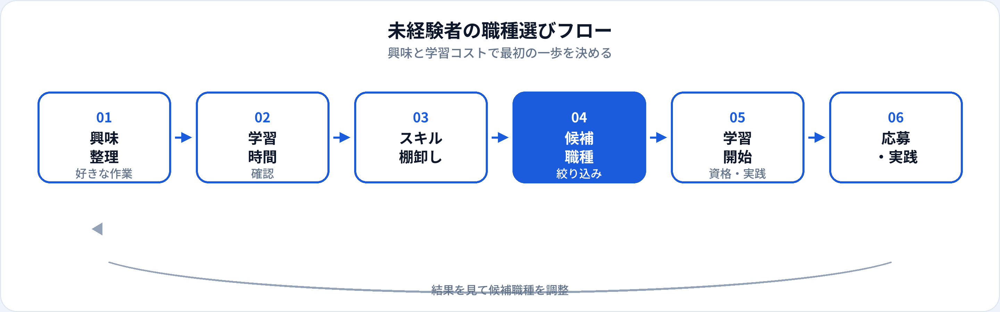

「AI職に未経験からなりたい」という相談で、いきなり機械学習エンジニアやMLOpsを狙うのは、学習コストが高く挫折しやすいことがあります。本記事では、2026年6月時点の市場感覚で、未経験から現実的に最初の一歩になりやすいAI関連職種5つを、入りやすさ・学習コスト・年収の観点で比較します。各職種の詳細は個別ガイドへリンクしています。
選定の考え方
本記事の「未経験者向け」は、AI・データ職の実務経験がなくても、独学または現職の延長で6〜12か月程度の学習から応募の入口に立てる職種を指します。完全未経験でも、事務・営業・マーケなどで数字やドキュメント業務をした経験はプラスになります。
ランキングは「入りやすさ」を主軸にしていますが、年収の上限や市場の熱量だけで選ぶと学習が長期化しやすいです。まず一つに絞り、ポートフォリオか社内実績を作ってから隣接職種へ広げる戦略が現実的です。
おすすめ5職種

-
1. データアナリスト
SQLとBIが中心で、未経験からの入口として最も現実的なことが多い。定例レポートやダッシュボードのポートフォリオを作りやすい。詳細はデータアナリストとは。
-
2. プロンプトエンジニア（兼務・社内推進含む）
プログラミングなしでも始めやすいが、専任求人は限定的。本業＋生成AI活用としてスキルを積み、生成AIエンジニアへ広げるルートも。詳細はプロンプトエンジニアとは。
-
3. AIエンジニア（ジュニア）
Pythonと機械学習の基礎が必要だが、「未経験可」の求人も一定数ある。G検定で用語を整理しつつ、小さな推論APIのポートフォリオを目指す。詳細はAIエンジニアとは。
-
4. データサイエンティスト（中期的目標）
アナリスト経験を土台に統計・Python・仮説検証を足すのが典型的。いきなりの未経験採用は難易度が上がる。詳細はデータサイエンティストとは、DSとアナリストの違いも参照。
-
5. 生成AIエンジニア（需要高・学習量多め）
LLM・RAGの実装スキルが必要でハードルは高いが、市場需要は強い。プロンプト経験やAPI実装から段階的に近づく。詳細は生成AIエンジニアとは。
比較一覧表
| 職種 | 入りやすさ | 学習の主軸 | 年収目安（当サイト） |
|---|---|---|---|
| データアナリスト | ◎ | SQL、BI | 400万〜800万円 |
| プロンプトエンジニア | ○（兼務含む） | プロンプト設計、評価 | 450万〜900万円 |
| AIエンジニア | ○ | Python、ML基礎 | 500万〜1,200万円 |
| データサイエンティスト | △（未経験直撃は難） | 統計、Python、ML | 500万〜1,100万円 |
| 生成AIエンジニア | △ | LLM、RAG、API | 600万〜1,400万円 |
学習のつながり
エンジニア寄りはG検定対策、生成AI寄りは生成AIパスポート対策で基礎を整理できます。例：TF-003（機械学習とAI）、TF-0234（RAG）。
自分に合う職種の選び方
| あなたの傾向 | まず狙いやすい職種 |
|---|---|
| Excel・数字の集計が好き、プログラミングはこれから | データアナリスト |
| 文章・企画が得意、生成AIを業務に入れたい | プロンプトエンジニア → 生成AIエンジニア |
| コードを書くのが好き、ものづくり志向 | AIエンジニア → MLエンジニア |
| 「なぜ？」を統計で答えたい | データアナリスト → データサイエンティスト |
| プロダクト全体を企画したい | 基礎学習後にAI PMも検討 |
5つ以外の次のステップ
基礎を積んだあとに検討しやすい職種です。いきなり未経験で狙うより、実務・ポートフォリオを経てからの方が現実的です。
-
機械学習エンジニア
学習パイプラインとデプロイまで担う。AIエンジニアと役割が重なることが多い。
-
MLOpsエンジニア
DevOps経験者や、運用自動化に興味がある人向け。比較はAI・ML・MLOpsの選び方。
-
AIプロダクトマネージャー
企画・要件定義が中心。エンジニア経験またはPdM経験があると入りやすい。
よくある質問
未経験からいちばん入りやすいAI職種は？
一般的にはデータアナリストです。SQLとBIを中心に学び、公開データでポートフォリオを作りやすいためです。
文系出身でもAI職になれる？
可能です。データアナリスト、プロンプト設計、AI PMなど、ドメイン知識が活きる職種も多いです。
30代・40代の未経験転職は？
前職のドメイン経験（金融、小売、製造など）を活かすと差別化しやすいです。データアナリストや社内AI推進から入る例もあります。
資格はどれから取るべき？
エンジニア寄りならG検定、生成AI活用寄りなら生成AIパスポートが学習整理に有用です。必須ではありません。
副業から本業に移れる？
小規模案件や社内副業で実績を作り、正社員転職に活かすパターンはあります。AI副業の準備と時間の使い方とポートフォリオの作り方も参照してください。